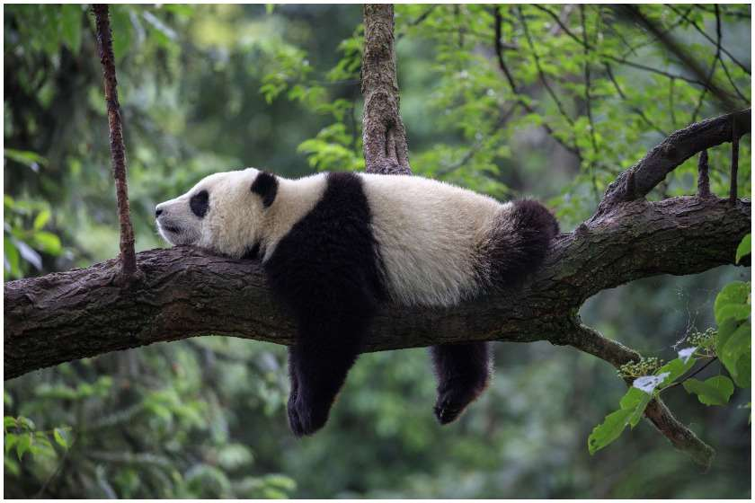

პანდა ბინადრობს ცენტრალური ჩინეთის სამხრეთით მთებში მდებარე ცივ, ნესტიან ტყეებში (აღმოსავლეთი ტიბეტი, სიჩუანი, იუნანი), 1200-4000 მეტრის სიმაღლეზე. სწორედ აქ იზრდება მისი საყვარელი საკვები ბამბუკი. ბამბუკის ტყეები აქ 30000 კვ. კმ.-ზეა გადაჭიმული, მაგრამ ვარაუდობენ, რომ პანდებს დაკავებული აქვთ მხოლოდ 6000 კვ. კმ. პანდები იშვიათად ცხოვრობენ ოჯახებში, ისინი თავს არიდებენ ერთმანეთს და მარტოობას ამჯობინებენ. გიგანტური პანდა აქტივობას ღამით გამოხატავს. მთელ დღეს ისინი ძილში ატარებენ. ამისათვის პანდა ადგილს ირჩევს ან კლდის მიყრუებულ ადგილას, ან ხის ფუღუროში. შებინდებისას იგი იღვიძებს და გათენებამდე აქტიურია.
